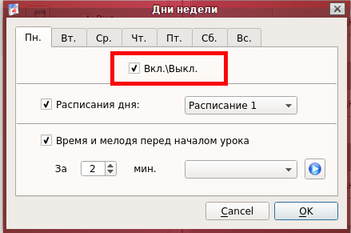
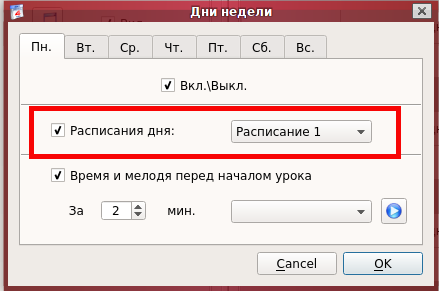
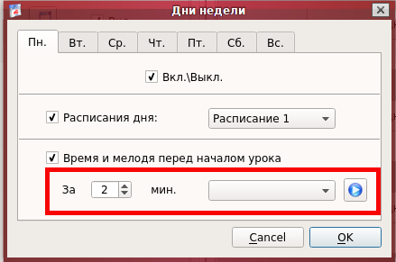
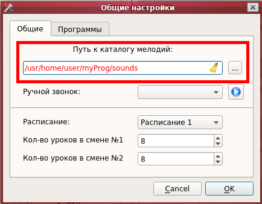
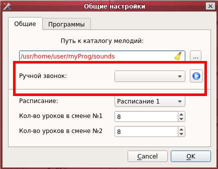
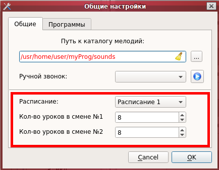

Каждое расписание состоит из двух смен, в которые входит выставляемое количество уроков. Для включения и выключения всех уроков смены служит флажок «Смена №» (рис. 1.A). При выставлении флажка — смена включается. Для удобства предусмотрена кнопка «скрыть ( ) / показать (  ) уроки в смене» (рис. 1.B), которая служит для скрытия или показа уроков смены.
) уроки в смене» (рис. 1.B), которая служит для скрытия или показа уроков смены.
Блок урока состоит из четырёх управляемых элементов: времени начала урока (рис. 1.C), времени окончания урока (рис. 1.D), кнопки выбора мелодий для начала и окончания урока (рис. 1.E), флажка включения/отключения урока (рис. 1.F).
В ячейку времени (рис. 1.A) можно вводить только цифры, самый удобный способ выставления времени с помощью колёсика мыши. При нажатии на кнопку выбора мелодий для начала и окончания урока (рис. 1.E) открывается окно, в котором производится выбор мелодий для начала и окончания данного урока, после выбора необходимо нажать кнопку «ОК». Список мелодий берётся из каталога для мелодий, предварительно выбранный в общих настройках.
При нажатии на флажок включения/отключения урока (рис. 1.F) происходит включение или отключение блока урока, при выключении все элементы, кроме данного флажка, становятся неактивными. При установке рабочего расписания, данные с выключенного урока устанавливаются как «-- : --», то есть пустые. Если флажок (галочка) установлена — урок включен.
Для установки рабочего расписания нужно выбрать в панели «Меню» пункт «Файл», далее «Применить». В правую панель приложения устанавливаются данные из текущей вкладки расписания.
Для подачи звукового сигнала (мелодии) нужно выбрать в панели «Меню» пункт «Звонок», далее «Подать звонок». Так же звуковой сигнал сработает, согласно данным из рабочего расписания ( правая панель ).
Данные настройки позволяют детальнее настроить расписания для каждого дня недели. Здесь можно включить или отключить (рис. 2.1) звонки на определённый день. Можно выбрать расписание для конкретного дня, которое будет автоматически переключаться при смене дня недели, или отключить данную функцию (рис. 2.2). Также выставляется время за которое будет проигрываться мелодия до начала занятия и саму мелодию или выключить данную функцию.(рис. 2.3).
|  |  |  |
(Рисунок 2.1) |
(Рисунок 2.2) |
(Рисунок 2.3) |
Данные настройки позволяют выбрать каталог в котором расположены нужные вам звуковые файлы (мелодии) (рис. 3.1) Если каталога не существует - текст в строке будет красным цветом. Можно выбрать мелодию для звонка, который будет подаваться вручную (рис. 3.2). Так же в этом окне выставляется количество уроков для смен в каждом расписании, для этого нужно выбрать в выпадающем списке интересующие вас расписание, и ниже выставить количество уроков для смен (рис. 3.3).
|  |  |  |
(Рисунок 3.1) |
(Рисунок 3.2) |
(Рисунок 3.3) |
Данные настройки позволяют выбрать максимум по две программы, которые будут запускаться до и после подачи звукового сигнала (данный параметр не является обязательным). Осторожно выбирайте файлы который нужно исполнить! Если требуется запускать больше программ, то можно создать скриптовый файл ( .bat для Windows или .sh для Unix/Linux) и прописать его как запускаемую программу (рис. 4).
Опишу свой пример использования данной функции. Есть пожарная система со своим усилителем, есть ещё один усилитель для сервера звонков, есть общая линия динамиков по всей школе. Одновременно нельзя подавать напряжение с двух усилителей! Для этого в точке пересечения линий стоит электро-магнитное реле. Перед подачей звукового сигнала с сервера звонком запускаеться программа, которая переключает положение реле, а по окончанию - запускается другая программа для возврата реле в исходное положение.